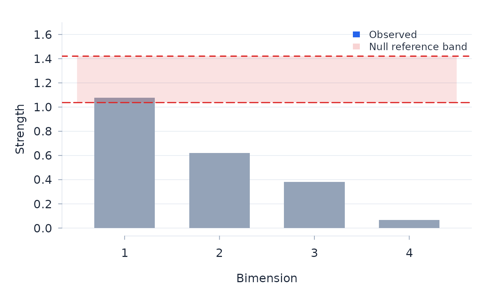

Rasch analysis of comparative judgements
Josh McGrane
Source:vignettes/paired-comparisons.Rmd
paired-comparisons.RmdFit the Bradley–Terry–Luce model
Paired-comparison data record two objects and an observed preference. In the Bradley–Terry–Luce model (Bradley and Terry 1952; Luce 1959), the log odds of choosing object A over object B are their location difference:
\[ P(A\succ B)=\frac{\exp(\beta_A)} {\exp(\beta_A)+\exp(\beta_B)}. \]
This is the conditional form of the dichotomous Rasch model (Rasch 1960; Andrich 1978). The comparison graph must connect all objects; otherwise their relative locations are not identified.
For ordered comparisons, btl fits the adjacent-category
extension
\[ \log\frac{P(Y=r)}{P(Y=r-1)}=\beta_A-\beta_B-\tau_r, \]
with thresholds symmetric under reversal of presentation order (Tutz 1986).
d <- simulate_btl(
n_objects = 8,
n_judges = 48,
reps_per_pair = 84,
erratic_judges = 2 / 48,
dependence = list(exposure = 0.7, carry_over = 0),
seed = 2
)
truth <- attr(d, "truth")
judge_number <- as.integer(sub("^J", "", d$judge))
d$panel <- factor(ifelse(judge_number %% 2L,
"panel A", "panel B"))
d$experience <- factor(ifelse(judge_number <= 24,
"experienced", "novice"))
fit <- btl(d, object_a = "object_a", object_b = "object_b",
winner = "winner", judge = "judge", order = "order")
fit
#> Bradley-Terry-Luce analysis: 8 objects, 2352 comparisons, 48 judges
#> Conditional ML: converged in 6 iterations; sandwich SEs clustered by judge
#> Object separation index 0.985; pairwise chi-square 19.83 on 19 df, probability unavailable
#> Within-judge exposure: 0.669 logits (SE 0.208, t = 3.21, Holm p = 0.005)
#> Within-judge carry-over: 0.010 logits (SE 0.084, t = 0.12, Holm p = 0.906)
#> object location se comparisons wins fit_resid extreme
#> O1 -1.329 0.155 588 120 -0.310
#> O2 -0.961 0.113 588 163 0.201
#> O3 -0.543 0.094 588 218 0.462
#> O4 -0.099 0.098 588 277 0.992
#> O5 0.167 0.081 588 317 -0.769
#> O6 0.608 0.101 588 378 -1.035
#> O7 0.941 0.110 588 423 -0.257
#> O8 1.216 0.125 588 456 1.117
#> Judges beyond |fit residual| 2.5: 2 (J20, J5)
#> Notes: the pairwise chi-square probability is withheld because its row-based reference does not model within-judge dependence; the statistic remains descriptive, and fit_bootstrap() provides calibration under the fitted response model
fit$objects
#> object location se comparisons wins infit_ms outfit_ms fit_resid df_fit
#> O1 -1.329 0.155 588 120 0.964 0.974 -0.310 585.750
#> O2 -0.961 0.113 588 163 1.029 1.014 0.201 585.750
#> O3 -0.543 0.094 588 218 1.007 1.023 0.462 585.750
#> O4 -0.099 0.098 588 277 1.041 1.041 0.992 585.750
#> O5 0.167 0.081 588 317 0.980 0.968 -0.769 585.750
#> O6 0.608 0.101 588 378 0.974 0.947 -1.035 585.750
#> O7 0.941 0.110 588 423 1.002 0.983 -0.257 585.750
#> O8 1.216 0.125 588 456 1.038 1.094 1.117 585.750
#> extreme
#>
#>
#>
#>
#>
#>
#>
#> Panel and experience are crossed judge factors with no planted object difference. Two judges answer at random, an exposure effect is added in judgment order, and carry-over remains zero. Residual dimensionality is examined separately below because combining a second attribute with this history model would make the carry-over estimate conditional on a deliberately misspecified common scale.
Judge residuals describe agreement with the common object scale; they are not person measures. Object fit, judge fit, targeting, and comparison information address different parts of the design and should be considered together.
judge_order <- order(abs(fit$judges$fit_resid), decreasing = TRUE)
head(fit$judges[judge_order, ], 6)
#> judge n infit_ms outfit_ms fit_resid df_fit
#> J20 49 2.234 2.868 4.318 48.812
#> J5 49 0.654 0.588 -2.744 48.812
#> J1 49 1.472 1.595 2.124 48.812
#> J23 49 1.293 1.577 1.859 48.812
#> J15 49 0.722 0.687 -1.702 48.812
#> J26 49 1.126 1.525 1.619 48.812
erratic_fit <- fit$judges[match(truth$erratic, fit$judges$judge), ]
erratic_judge <- erratic_fit$judge[
which.max(abs(erratic_fit$fit_resid))
]
judge_surprise(fit, erratic_judge)
#> Judge J20: 49 comparisons over 8 objects
#> Unexpected judgements:
#> O1 (loc -1.33): z = +5.02, Holm p = < 0.001 [weak object over-rated]
#> O6 (loc +0.61): z = -3.38, Holm p = 0.005 [strong object under-rated]
#> O8 (loc +1.22): z = -3.31, Holm p = 0.006 [strong object under-rated]
#> O7 (loc +0.94): z = -2.93, Holm p = 0.017 [strong object under-rated]
#> O4 (loc -0.10): z = +2.63, Holm p = 0.034 [weak object over-rated]
#> O3 (loc -0.54): z = +2.62, Holm p = 0.034 [weak object over-rated]
btl_information(fit)
#> Paired-comparison design information: 8 objects, total 428.71
#> One-comparison Fisher information about the location gap (dichotomous: P(1 - P))
#> object location se n_comparisons information se_naive
#> O1 -1.329 0.155 588 87.425 0.107
#> O2 -0.961 0.113 588 102.075 0.099
#> O3 -0.543 0.094 588 115.101 0.093
#> O4 -0.099 0.098 588 120.992 0.091
#> O5 0.167 0.081 588 120.975 0.091
#> O6 0.608 0.101 588 114.048 0.094
#> O7 0.941 0.110 588 103.824 0.098
#> O8 1.216 0.125 588 92.988 0.104
#> Note: se is the judge-clustered Godambe sandwich standard error; se_naive = 1/sqrt(information) is a design-only yardstick (the object's comparisons treated in isolation), not a bound -- the fitted se can sit below or above itBootstrap goodness of fit
The pairwise chi-square and the object and judge residuals use
approximate references. fit_bootstrap() generates outcomes
on the observed comparison design and refits the model. It reports the
whole-model probability and joint adjusted probabilities for pairs,
objects and judges. Ordered thresholds and history effects are retained;
history-dependent outcomes are generated in sequence. Report the usable,
non-converged, and other-failure counts. A maxT adjustment is
unavailable for the complete family if one testable member lacks a
usable joint null. Each statistic is adjusted under the fitted global
null. The adjustment does not guarantee familywise error among fitting
pairs, objects or judges when another member departs from the model.
With exposure and carry-over fitted jointly at 30 judges, a 1,000-dataset dichotomous study gave 4.8% total error and 3.9%, 4.8% and 5.5% adjusted familywise error for pairs, objects and judges. A 200-dataset four-category study gave 3.0%, 3.5%, 6.0% and 6.0%. All 238,800 refits were usable.
boot <- fit_bootstrap(fit, B = 999, seed = 2026)
boot$total
head(boot$pairs[order(boot$pairs$chisq_p_boot_adj), c(
"object_a", "object_b", "chisq", "chisq_p_boot_adj"
)])
head(boot$objects[order(boot$objects$fit_resid_p_boot_adj), c(
"object", "fit_resid", "fit_resid_p_boot_adj"
)])
head(boot$judges[order(boot$judges$fit_resid_p_boot_adj), c(
"judge", "fit_resid", "fit_resid_p_boot_adj"
)])Check transitivity and residual structure
Circular triads (Kendall and Babington Smith 1940) identify local contradictions in the observed ordering. Residual dimensionality asks whether comparisons contain a structured second attribute after the primary scale is fitted.
When a judgment-order column is supplied, fit$dependence
reports the exposure and carry-over effects; adding
position = TRUE reports the position effect alongside them.
Use p_adj, which applies Holm’s correction across the
declared effects even when one probability is withheld; p
is retained as the raw probability.
tr <- btl_transitivity(fit)
tr
#> Paired-comparison transitivity: 8 objects, 56 complete triples
#> Circular triads: 0 (0.0% of triples; random-tournament benchmark 25%) -> consistency 1.00
#> Kendall coefficient of consistency (complete design): 1.000
#> Per-judge consistency reported for 48 judge(s); least consistent 0.05
#> Note: the 0.25 chance rate is a random-tournament benchmark, not the fitted BTL expected circular rate; transitivity is descriptive
dim_data <- simulate_btl(
n_objects = 8, n_judges = 48, reps_per_pair = 84,
second_attribute = list(rho = 0.3), seed = 47
)
dim_fit <- btl(dim_data, object_a = "object_a", object_b = "object_b",
winner = "winner", judge = "judge")
dimensions <- btl_dimensionality(dim_fit, reps = 20, seed = 2026,
independent_comparisons = TRUE)
dimensions
#> Paired-comparison residual dimensionality: 4 bimension(s)
#> Leading bimension strength 1.078 (68% of residual; reference 5% upper limit: 1.421; adjusted p = 0.476) -> within the conditional reference
#> Note: the simulated reference assumes conditionally independent comparison outcomes given the fitted probabilities and any modeled history; it is not cluster-robust
plot_btl_scree(dimensions)
The decomposition compares observed and fitted expected points within each object pair. For ordered responses this includes the category thresholds; fitted position and history effects also enter the expectation.
The simulated comparisons in this example are independent, so the
call explicitly requests that reference. For judge-clustered data, the
default shows only the residual decomposition: clustered repetition can
look like dimensional structure against an independent-comparison
reference. The shaded area runs from the simulated mean to the
finite-simulation 5% upper limit. Twenty replicates keep this example
quick; a final sensitivity analysis needs enough replicates to stabilise
the reference distribution. An ordered analysis needs one row per
comparison: a replication count does not retain the sequence needed to
construct exposure and carry-over histories, so btl()
refuses that combination.
Examine DIF across judge groups
btl_dif tests whether object locations differ across
nominated judge factors. The omnibus analysis uses judges as the
independent units. A significant term is resolved into factor-specific
object locations and pairwise logit differences. HC3 covariance allows
the precision of judge means to vary with their comparison workloads.
Omnibus and pairwise inference require at least eight judges and eight
effective judges in every relevant factor cell; estimates remain
descriptive below that boundary. The tables report both counts. Panel
and experience are null in this example, so an adjusted flag would be a
false positive rather than a planted result.
bd <- btl_dif(fit, d[c("panel", "experience")])
bd_order <- order(bd$summary$p_uniform_adj)
head(bd$summary[bd_order, c(
"object", "term", "F_uniform", "p_uniform_adj", "eta2_uniform",
"min_judges", "min_effective_judges"
)], 6)
#> object term F_uniform p_uniform_adj eta2_uniform min_judges
#> O1 panel 1.198 1.000 0.028 24
#> O1 experience 0.118 1.000 0.003 24
#> O2 panel 0.000 1.000 0.000 24
#> O2 experience 0.932 1.000 0.022 24
#> O3 panel 0.306 1.000 0.007 24
#> O3 experience 1.552 1.000 0.035 24
#> min_effective_judges
#> 22.421
#> 22.333
#> 22.179
#> 22.030
#> 22.403
#> 22.260An optional fitted-outcome bootstrap repeats the comparison fit and the complete object-by-term family. It is a sensitivity analysis beside the primary HC3 residual analysis. Its familywise probabilities refer to the fitted global invariant null.
bd_boot <- dif_bootstrap(fit, bd, B = 999, seed = 2026)
bd_boot$summaryEquate panels through common objects
btl_equate aligns two calibrations that share at least
two objects. Two common objects identify a descriptive origin shift; at
least three with usable covariance information are needed for
object-drift tests. For two fitted calibrations, drift inference is
withheld until independent judges and comparisons are stated explicitly.
The shift is precision-weighted when at least two common objects have
usable variances. If they do not, the function uses the unweighted mean
location difference, labels it in shift_method, and keeps
the link descriptive. An exact common anchor fixes the shift even when
other common objects have unavailable SEs.
eq <- btl_equate(current_panel, reference_panel, independent = TRUE)
eq$table
eq$equated # reference panel on the current panel's originThe SEs in eq$equated include uncertainty in the shift
and its covariance with the reference locations. They are withheld when
that joint uncertainty is unavailable. The table retains its covariance
and finite-sample degrees of freedom as attributes; it is not
independent of either input calibration.
A bank table may be used in place of reference_panel.
Marginal object standard errors are not enough for drift tests because
they omit the covariance created by the bank’s fitted origin. Attach the
joint matrix as attr(bank, "cov_location"), ordered like
the bank rows or named by object; otherwise the alignment is
descriptive. A bank treated as fixed may instead carry zero standard
errors. Dependent panels require a joint or paired bootstrap outside
this function.
Linked frames for paired comparisons
btl_efrm combines the comparative judgement model with
Humphry’s extended frame of reference structure (Humphry and Andrich
2008). Judges belong to panels, and objects belong to linked sets. For
object \(k\) in set \(s\),
\[ v_k=\alpha_s\beta_k+\kappa_s. \]
A same-set comparison in panel \(g\)
has logit \(\phi_g(\beta_A-\beta_B)\);
a cross-set comparison has logit \(\phi_g(v_A-v_B)\). As in Humphry and
Andrich (2008, eq. 15), \(\phi_g\) and
\(\alpha_s\) are unit ratios: the
common reference unit over the frame’s own unit. The panel units \(\phi_g\) have geometric mean one. For the
linked item sets, the first set fixes \(\alpha_1=1\) and \(\kappa_1=0\), defining the unit and origin
of the common scale; the remaining set transformations are estimated
relative to it. A value above one denotes a finer unit and steeper
comparisons. Cross-set comparisons identify the set units and origins.
The cross-set likelihood holds the within-set locations and panel units
fixed. It estimates the set transformations directly from the comparison
outcomes and does not use the finite-grid person-distribution link in
rasch_efrm().
de <- simulate_btl_efrm(
n_objects_per_set = 5, n_sets = 2,
n_judges_per_panel = 6, n_panels = 2,
reps_within = 15, reps_cross = 15,
set_units = c(1, 1.3), set_origins = c(0, 0.6), seed = 9
)
ef <- btl_efrm(
de, "object_a", "object_b", winner = "winner", judge = "judge",
panels = "panel", object_sets = attr(de, "truth")$object_sets,
se_method = "conditional"
)
ef$phi_table
#> panel phi se_log_phi t df p p_adj significant
#> panel1 0.801 0.091
#> panel2 1.249 0.091
ef$alpha_table
#> set alpha se_log_alpha t df p p_adj significant
#> set1 1.000
#> set2 1.092 0.127
ef$kappa_table
#> set kappa se_kappa t df p p_adj significant
#> set1 0.000
#> set2 0.494 0.124The default judge bootstrap resamples judges within panels and refits
both stages. A set’s panel-ratio fit must pass an exact
likelihood-curvature check before entering the reconciliation. Failed
sets are omitted from that reconciliation; estimation stops if the
remaining sets cannot link all panels. Cross-set outcomes are checked
for complete and quasi-complete separation; neither supports a finite
link. Reaching the iteration limit is not convergence. Saved frame fits
without a current likelihood-check record require refitting before
reopening in the app; their source files remain unchanged. The
parametric bootstrap (se_method = "bootstrap") draws
independent outcomes from the fitted model. The conditional option used
above reports estimates and conditional standard errors but withholds
probabilities because it does not propagate stage-one uncertainty into
the set link. With either bootstrap, omnibus probabilities are
Holm-adjusted across the three unit families. Individual panel-unit,
set-unit and set-origin contrasts form one separate Holm-adjusted
follow-up family. Judge-bootstrap tests require at least six judges and
5.5 effective judges in every panel, and eight of each on a set link.
The pooled pairwise chi-square is retained as a descriptive fit summary,
but its row-based probability is not reported because judges contribute
repeated comparisons. Judge resamples are distributed over four workers
by default, or fewer where the system imposes a lower limit. Set
seed to reproduce the resamples. The parametric bootstrap
remains serial because its refits are inexpensive. In the application,
frame estimation runs in the background and may be cancelled.
With six judges per panel and 20 repetitions per pair, a 1,000-fit null study gave raw marginal rejection of 3.3 per cent for panel units, 6.7 per cent for set units and 6.0 per cent for set origins. Holm familywise rejection was 3.9 per cent across the omnibus decisions and 3.0 per cent across their follow-ups; set-unit coverage was 0.900. This design lies in the caution band reported by the fit. With 12 judges per panel and the default 200 resamples, raw set-unit rejection was 4.6 per cent, the empirical-to-reported SE ratio was 0.992 and coverage was 0.934 over 500 null fits. With more within- and cross-set information, finite-sample attenuation of the set-unit estimate declined: log-unit bias was -0.041 at 20 repetitions per pair, -0.016 at 50 and -0.006 at 100. Reported decisions use Holm adjustment across the three omnibus tests; the individual unit contrasts form a separate Holm-adjusted family.
The same analysis in the application
rasch::run_app() fits comparative judgement designs
alongside the other models, and the sequence above maps onto its panels.
Choosing Comparative Judgement as the model changes
what the Data panel asks for: instead of item columns
it wants the two object columns and the observed preference, with the
judge column and any judge factors beside them. A judgment-order column
is assigned here too, which is what makes the exposure and carry-over
terms available later.

Summary reports what btl() prints: the
design counts, the pairwise chi-square, the object separation index, and
the within-judge exposure and carry-over effects when a judgment-order
column was assigned — with inference withheld on designs too small to
support it, stated as a note rather than silently. A design whose
comparison graph does not connect is refused for the same reason it is
refused in the code — the relative locations are not identified. The
fit-bootstrap button runs the fitted-design bootstrap in the background
and adds adjusted probabilities to the pair, object and judge tables. It
can be cancelled without losing the fitted model.

Items becomes the object panel. The caterpillar plot
orders the objects by location with their confidence intervals, which is
the graphical form of fit$objects; the panels beside it
hold the symmetric thresholds, the threshold components and the category
probability curves for an ordered design, and the pairwise fit that
btl_transitivity() summarises.

Persons becomes the judge panel: judge fit, the
surprise index that judge_surprise() returns, and the
consistency of each judge’s comparisons. These describe agreement with
the common object scale, and are not person measures — the same caution
the code section makes.

Under Invariance, the DIF panel runs
btl_dif() over the nominated judge factors. It reports the
omnibus test with judges as the independent units, the factor-specific
object locations and their pairwise differences in logits, and the raw
and effective judge counts in the least-supported cells — so a design
below the eight-judge boundary shows why its inference is withheld
rather than simply returning nothing.

Equating and extended frames sit in the same menu. Frame estimation runs in the background and can be cancelled, because the judge bootstrap is the expensive part of the analysis. As in the Rasch panels, every table and figure carries an R code disclosure holding the call that produced it.
A worked analysis on real data
The party
blocs case study fits the comparative judgement frame model to real
paired comparisons between political parties, with judge panels and
ideological blocs as frames. Its script ships with the package under
casestudies.
References
Andrich, D. (1978). Relationships between the Thurstone and Rasch approaches to item scaling. Applied Psychological Measurement, 2, 451–462.
Bradley, R. A., and Terry, M. E. (1952). Rank analysis of incomplete block designs: I. The method of paired comparisons. Biometrika, 39, 324–345.
Humphry, S. M., and Andrich, D. (2008). Understanding the unit in the Rasch model. Journal of Applied Measurement, 9(3), 249–264.
Kendall, M. G., and Babington Smith, B. (1940). On the method of paired comparisons. Biometrika, 31(3/4), 324–345.
Tutz, G. (1986). Bradley-Terry-Luce models with an ordered response. Journal of Mathematical Psychology, 30(3), 306–316.
Luce, R. D. (1959). Individual Choice Behavior: A Theoretical Analysis. Wiley.
Rasch, G. (1960). Probabilistic Models for Some Intelligence and Attainment Tests. Copenhagen: Danish Institute for Educational Research. (Expanded edition, 1980, Chicago: University of Chicago Press.)